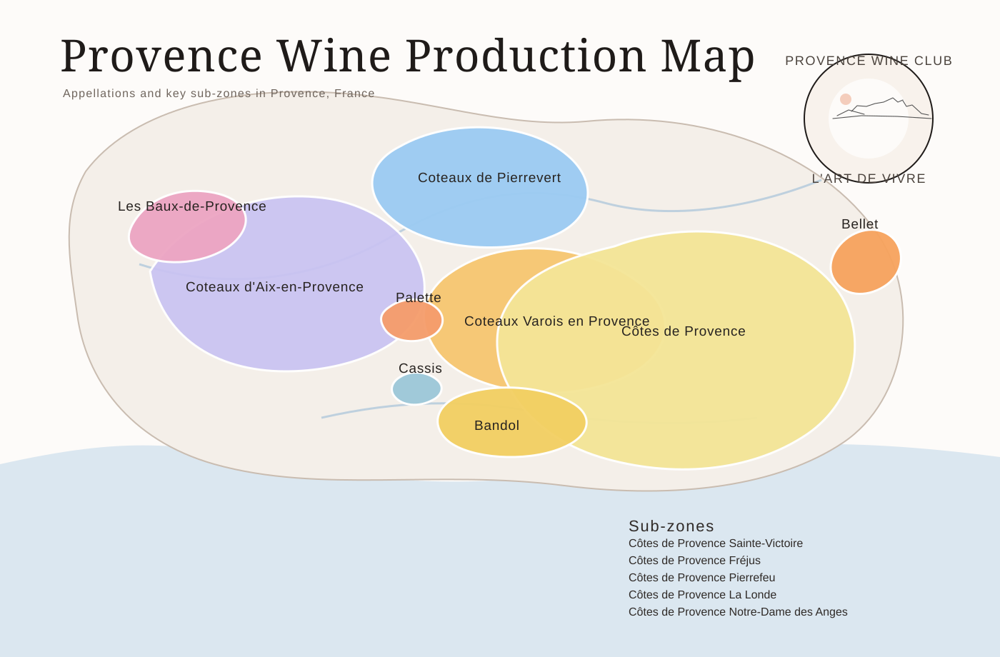

Provence Wine Map
Find the main Provence wine appellations, understand the names inside Côtes de Provence and turn geography into a useful bottle clue.
Map in brief: Provence runs across south-east France toward the Mediterranean. Coteaux d'Aix-en-Provence lies to the west; Coteaux Varois en Provence occupies inland limestone country; and Côtes de Provence stretches widely through coastal and inland areas farther east. Bandol and Cassis sit near the coast around Marseille and Toulon, while smaller appellations include Palette, Les Baux-de-Provence and Bellet.

How to read Provence from west to east
A map prevents the most common mistake in Provence wine: treating the whole region as one uniform strip of pale rosé. The Mediterranean is a major influence, but distance from the sea, elevation, exposure, soils and local winds change across the region. Appellation is therefore a starting clue, not a tasting guarantee.
Les Baux and Aix
Les Baux-de-Provence sits around the Alpilles. Coteaux d'Aix-en-Provence extends from the Durance side toward the Mediterranean and east toward Sainte-Victoire.
Palette, Cassis and Bandol
Palette is a tiny appellation near Aix. Cassis and Bandol occupy distinct coastal settings east of Marseille, with Cassis noted for white wine and Bandol for Mourvèdre-led reds and structured rosé.
Var, Côtes and Bellet
Coteaux Varois en Provence lies inland around Brignoles. The extensive Côtes de Provence reaches across much of the Var and beyond, while Bellet occupies hills around Nice.
The three appellations called “Vins de Provence”
The Conseil Interprofessionnel des Vins de Provence represents three protected appellations. Together they are commonly presented as Vins de Provence, but they do not include every wine appellation in the wider Provence region.
Côtes de Provence
This is the broadest geographical name most Australian buyers will see. Its vineyards span the Var, part of Bouches-du-Rhône and one commune in Alpes-Maritimes. Coastal and inland conditions, limestone and crystalline landscapes, and multiple named terroirs mean Côtes de Provence cannot be reduced to one flavour profile.
Coteaux d'Aix-en-Provence
The westernmost of the three extends from the Durance toward the Mediterranean and from the Rhône side toward Montagne Sainte-Victoire. Rosé is prominent, while red and white wines are also produced. On an Australian shelf, the name tells you protected origin; it does not promise a particular shade or sweetness.
Coteaux Varois en Provence
Centred on inland limestone country around Brignoles, this appellation occupies basins and narrow valleys across 28 communes. Its more inland, often higher setting makes freshness a useful general clue, but producer, site, vintage and winemaking still determine the bottle.
The five names inside Côtes de Provence
Five additional geographical designations can appear with Côtes de Provence. They identify more specific production areas and rules inside the larger appellation:
Sainte-Victoire
At the western side of Côtes de Provence, around the limestone Montagne Sainte-Victoire.
Fréjus
On the eastern side of the Var, influenced by the volcanic landscapes around Fréjus.
La Londe
A coastal designation around La Londe-les-Maures, with strong Mediterranean influence.
Pierrefeu
An inland-to-coastal sector north-east of Toulon, centred around Pierrefeu-du-Var.
Notre-Dame des Anges
In the central Var around the Notre-Dame des Anges high point; recognised as the fifth designation.
These names are origins within Côtes de Provence, not a universal ranking above ordinary Côtes de Provence. A well-chosen regional wine can be more satisfying than a poorly stored or unsuitable bottle with a narrower designation.
Appellations in wider Provence
Several important Provence names sit outside the three represented by Vins de Provence. Their position on the map helps explain why “Provence” and “Côtes de Provence” are not synonyms.
- Bandol: a coastal appellation east of Marseille, associated with structured Mourvèdre-led red wines as well as gastronomic rosé and a smaller amount of white.
- Cassis: a small coastal appellation beside the Mediterranean, especially associated with white wine and seafood-friendly styles.
- Palette: a very small appellation near Aix-en-Provence producing all three colours.
- Les Baux-de-Provence: in the Alpilles landscape west of Aix, producing red, rosé and white wines.
- Bellet: a small, steep vineyard area in the hills of Nice with distinctive local varieties.
- Pierrevert: on the higher northern edge of the broader Provençal wine landscape, geographically separate from the Mediterranean core.
For a side-by-side style and occasion matrix, continue to the Provence appellation comparison.
How an Australian buyer can use the map
- Find the exact appellation. Look for “Appellation … Protégée” or “AOP” and match the name to the map. “Product of France” alone is not enough.
- Separate origin from style. A place name controls origin and production rules, not one fixed flavour. Check colour, grapes where provided, producer and vintage.
- Choose for the table. Cassis can be a useful direction for coastal white wine; Bandol for more structure; the three Vins de Provence appellations for a broad range of rosé, red and white.
- Check the Australian journey. Importer, retailer, shipping conditions and storage matter. Heat damage can erase the freshness geography helped create.
Quick answers
Where is the Provence wine region?
It lies in south-east France, broadly between the lower Rhône side in the west and Nice in the east, with many vineyards influenced by the Mediterranean.
Is Côtes de Provence the same as Provence?
No. Provence is the wider region; Côtes de Provence is one protected appellation within it.
What are the five Côtes de Provence terroir designations?
Sainte-Victoire, Fréjus, La Londe, Pierrefeu and Notre-Dame des Anges.
Which Provence wine region is known for white wine?
Cassis is especially associated with coastal white wine, although white is made in several Provence appellations.